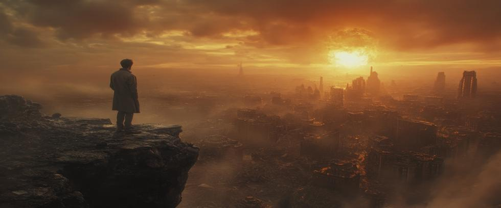

During the early morning hours of September 26, 1983, a lieutenant colonel named Stanislav Petrov was serving as the duty officer at a secret installation south of Moscow. It was a difficult time to be in the Soviet military.
The situation remained tense, but initial shock had faded into anger over an incident that occurred a few days earlier. Possibly mistaking it for an American RC-135 spy plane, the Soviet Union shot down Korean Air Flight 007 with 269 passengers onboard, including a US congressman.
American and Soviet conventional and nuclear forces were on high alert. Anything that would ordinarily be a minor incident could potentially escalate into a nuclear war.
Colonel Petrov’s job was often routine, but monitoring early warning systems for incoming nuclear strikes could be stressful at times. If missiles were detected heading toward the Soviet Union, he was ordered to inform the High Command immediately. Petrov knew that within minutes of his message, a decision would be made about launching retaliatory counterstrikes.
Just after midnight, multiple alarms began to sound. Warning lights flashed throughout the control room. Over thirty independent reliability checks all confirmed that something extraordinary was happening: America had launched intercontinental ballistic missiles at the Soviet Union.
The fate of the world possibly came down to what Colonel Petrov did next. Nuclear war could hang in the balance. The choice he faced was agonizingly simple—trust the system, or trust his instincts.
The False Alarm
The Soviet nuclear early warning system had just gone operational. Called Oko in Russian, its satellites were designed to detect infrared signatures of missiles launched from the United States. Oko’s designers claimed it was foolproof, but Colonel Petrov had doubts.
Why were only five missiles detected? If the US was starting World War III, wouldn’t it launch everything it had to limit retaliation as much as possible? But such questions were not his to ask. He was already disobeying orders by hesitating.
But Petrov knew that retaliatory strikes could not be recalled once the missiles were launched. He considered the data and weighed the possibilities. Then he made a decision.
He reported the alarm as false.
If he was wrong, Soviet cities would soon be unavenged fireballs. If he was right, he probably saved civilization from destruction, along with the life of nearly every human being on Earth.
Human versus Machine Judgment
Petrov’s decision went against Soviet procedure and established military doctrine. But it was the right call. Minutes later, the alerts suddenly ended. A satellite had mistakenly identified sunlight reflecting off high-altitude clouds as incoming missiles.
The danger was over, but what happened was terrifying.
Despite all the sophisticated technology and extravagant security measures money could buy, a simple computer glitch had nearly started World War III.
The survival of our civilization during those fleeting minutes came down to one man’s refusal to blindly follow orders without question. But the fact that such a situation could remotely be possible in the first place is far more serious than the word unacceptable can begin to describe.
The Man In the Uniform
Stanislav Yevgrafovich Petrov was not a typical hero. Born in Vladivostok in 1939, he trained as an engineer and later joined the Soviet Air Defense Forces. Petrov was a disciplined officer but not particularly ambitious. His colleagues described him as quiet and thoughtful, but oddly skeptical of machines—an unusual quality in a modern military obsessed with the latest technology.
Petrov’s intuition that fateful night was born of experience. He knew the system was new and still prone to errors. He also knew that computers could not fully grasp the subtle nuances of human intent. The Americans, Petrov reasoned, were hostile but not suicidal.
Colonel Petrov was later reprimanded—not for his decision, but for procedural errors in the way he handled it. Few were aware of what happened at the time, and the incident remained classified for more than a decade.
Petrov’s actions became an uncomfortable subject in a bureaucracy that prized blind obedience. But charges of insubordination would have been awkward considering that he probably prevented a nuclear war.
On the Brink
To understand the magnitude of Petrov’s decision, one must understand the context. The year 1983 was one of the most dangerous in history.
America was deploying Pershing II nuclear missiles in Western Europe that could strike Moscow within ten minutes. President Ronald Reagan declared the Soviet Union was an “evil empire,” then established the Strategic Defense Initiative (SDI) to develop technology for intercepting Soviet missiles in space.
Tensions were high and the rhetoric extreme on both sides. In such a climate, a nuclear false alarm could trigger retaliation based on fear rather than fact. That night, it nearly did.
But one man said no.
The Aftermath
Colonel Petrov lived in obscurity for years afterward. The event remained secret until 1998, when a retired Soviet general revealed the story to journalists. Petrov was living modestly near Moscow at the time, caring for his ailing wife.
But when his story reached the western media, Petrov was hailed as “the man who saved the world.” Honors were given by the United Nations, Germany, and numerous citizens organizations. He was even awarded the Dresden Peace Prize in 2013. But when asked how it felt to be credited with preventing a nuclear war, Colonel Petrov simply replied, “I was just doing my job.”
Stanislav Petrov never saw himself as a hero. He often said that any reasonable person would have done the same. But history tells a different story – one filled with those who blindly followed orders they should have questioned instead.
Fallible Systems
Petrov’s actions against official procedure benefited everyone on Earth, but the incident exposed once again the fallibility of systems that control nuclear weapons.
Both Soviet and American defense infrastructures were built on the assumption that machines could detect, calculate, and respond faster than humans. But speed has no wisdom or insight. Technology can malfunction. Algorithms cannot judge subtle shifts in human attitudes.
Since 1945, there have been numerous false alarms caused by satellite glitches, communications failures, and even a faulty 46-cent computer chip. Each could have ended in catastrophe.
That our civilization still exists is due less to our wisdom and sophisticated technology than it is to the blind luck we’ve experienced, and to the extraordinary actions of individuals like Stanislav Petrov.
The Right Stuff
The expression “the right stuff” is often reserved for astronauts, war heroes, or famous explorers—those who face physical danger with courage and conviction. But Colonel Petrov had courage of a different kind. His bravery was revealed by resisting pressure to act fast, and by refusing to let rigid protocol dictate the fate of billions.
Stanislav Petrov died in 2017 at age 77 from natural causes. His passing went largely unnoticed at the time, but his legacy cannot truly be measured. That humanity has witnessed the sunrise for forty-two years since that fateful night in the bunker is probably because of him.
Lessons Not Learned
Petrov’s story reminds us that no machine, no system, and no doctrine can substitute for human judgment and experience. It also exposes the bizarre practice of maintaining nuclear arsenals on high alert. The Cold War is over, but thousands of nuclear weapons remain ready to launch on a moment’s notice.
A false alarm like the one that nearly destroyed our civilization four decades ago can happen in innumerable ways. But someone like Colonel Petrov may not always be around to save the day. Instead, we must eliminate the conditions that made him disobey orders to begin with.
The Path Forward
At Our Planet Project Foundation, we believe that nuclear war cannot be prevented by nuclear weapons. But system failures like the one in 1983 can cause a war with nuclear weapons.
Stanislav Pertov bought us precious time, but we must seize the opportunity to eliminate these weapons of mass destruction before that time runs out. Our civilization and our lives are at stake every minute of every day that nuclear weapons remain.